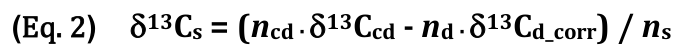
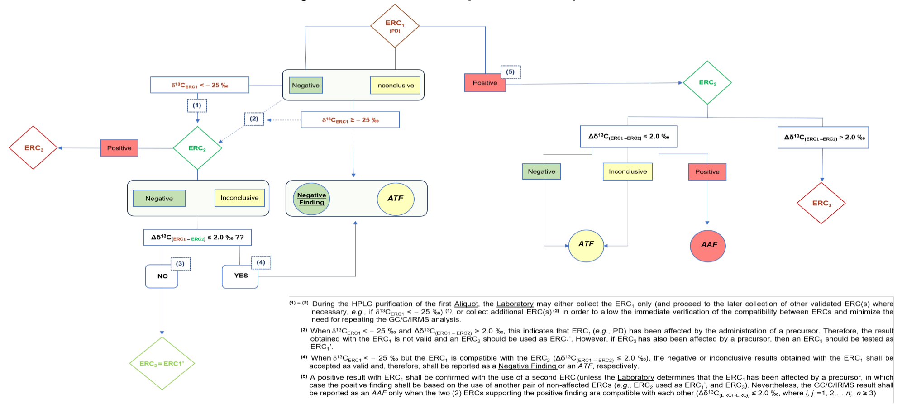

Technical Documents · ISL TD2027IRMS
Edition v1.0, 2027 (version 1.0) · effective 1 January 2027 · current
Retrieved on 26 November 2026 from https://www.wada-ama.org/sites/default/files/2026-09/isl_td2027irms_v1.0_eng.pdf
Editions: v1.0, 2027 (current) · v1.0, 2022 · v2.0, 2021 · v1.0, 2021 · v1.0, 2019 · v1.0, 2016 · v1.0, 2014
p. 1
Detection of Synthetic Forms of Prohibited Substances by GC/C/IRMS
1.0 Scope
This Technical Document (TD), which constitutes an integral part of the International Standard for Laboratories (ISL[1]), describes the Gas Chromatography / Combustion / Isotope Ratio Mass Spectrometry (GC/C/IRMS) Analytical Testing Procedure (ATP) applied to detect the presence of synthetic forms of Prohibited Substances in urine Samples.
2.0 Introduction
The application of GC/C/IRMS is based on the measurement of the relative ratios of the two (2) stable carbon isotopes¹² C and 13 C (i.e., the carbon isotope ratio (CIR) ¹³C/¹²C, expressed as δ¹³C values) of Target Compounds (TCs) and Endogenous Reference Compounds (ERCs). The calculation of the absolute difference in δ¹³C values between the measured compounds, i.e., the ∆δ¹³C, allows establishing the origin (endogenous or exogenous)¹ of TCs when their δ¹³C values are compared to those of ERCs, as well as whether a given ERCᵢ may have been affected by the administration of a metabolic precursor (see Article 6.1.1 b).
(Eq. 1)
a) ∆δ¹³C(ERC - TC) = │δ¹³C(ERC) - δ¹³C(TC) │
b) ∆δ¹³C(ERCi - ERCj) = │δ¹³C(ERCi) - δ¹³C(ERCj)│
2.1 Endogenous Reference Compounds
a) The Laboratory shall validate at least three (3) ERCs, including pregnanediol (PD) and two (2) additional ERCs selected from 5α-androst-16-en-3α-ol (16-en), 11β-hydroxyandrosterone (11-OH-A), 11-oxo-etiocholanolone (11-oxo-Etio), cholesterol (CHOL), pregnanetriol (PT) and, where applicable, androsterone (A) (see Articles 4.1 and Annex A).
b) The use of at least two (2) ERCs is required for the conclusive interpretation of some results (e.g., to conclude an Adverse Analytical Finding (AAF) - see Article 6.2.2). In those cases, the Laboratory shall avoid the combined use of ERCs (or the replacement of one ERC for the other when one (1) of the ERCs has been affected by the administration of a precursor) known to be related to the same metabolic precursor (e.g., 11-OH-A and 11-oxo-Etio, which are metabolically related to adrenosterone, cortisone, and hydrocortisone).
¹Endogenous origin - compounds naturally produced by the human body; Exogenous origin - synthetic analogues of naturally produced compounds
p. 2
c) The Laboratory shall specify in its Standard Operating Procedure (SOP) for the GC/C/IRMS Test Method which ERC is designated as ERCᵢ (where i = 1, 2,…, n; n ≥ 3) and apply them consistently in this order for the analysis of Samples.
d) PD shall be used as the primary ERC (ERC₁) if measurable in the Sample (i.e., if the signal is not suppressed or affected by poor chromatography, and the δ¹³C(PD) has not been affected by the administration of a precursor, e.g., pregnenolone) - see also Article 6.1.1 b).
e) When the ERC₁ (e.g., PD) is not measurable in the Sample or has been affected by the administration of a precursor (see Article 6.1.1 b.), an additional valid ERC (i.e., not affected by a precursor), starting with the ERC designated as ERC₂, shall be used to replace the ERC₁ (as ERC₁').
f) The same ERCs shall be used for determination of all ∆δ¹³C values in the Samples and in the Quality Control (QC) samples: Negative (NQC) and positive (PQC) urine QC samples.
g) The same ERCs that allowed concluding an AAF for the "A" Sample shall also be used during the "B" Sample CP (see also Articles 6.1.2 and 7.0).
2.2 Target Compounds
TCs for GC/C/IRMS analysis include the urinary Markers of the Steroidal Module of the Athlete Biological Passport (ABP) according to Article 3.1 as well as other Prohibited Substances (Article 3.2).
3.0 Application of GC/C/IRMS
3.1 GC/C/IRMS Analysis for the urinary Markers of the Steroidal Module of the Athlete Biological Passport
a) GC/C/IRMS analysis shall be conducted as a mandatory ATP[2] for the confirmation of Atypical Passport Findings (ATPFs) for the urinary steroid Markers of the Athlete Biological Passport (ABP), as described in the ISL TD USM.[3]
i. In addition, the Testing Authority (TA), the Results Management Authority (RMA), or WADA may request GC/C/IRMS analysis to be performed on any urine Sample.
ii. The Athlete Passport Management Unit (APMU) or the Passport Custodian (PC), where the PC is not the TA, may also request the GC/C/IRMS analysis of the urinary steroid Markers on behalf of the TA (or RMA, if different). In such cases, the PC or the APMU (which may have been bestowed such authority by the PC) shall copy the relevant TA on all written requests to the Laboratory.
iii. Furthermore, the Laboratory may also advise the TA to perform (or not) the GC/C/IRMS analysis based upon its expertise, for example, in the presence of any other Marker(s) of Use of synthetic forms of Endogenous Anabolic Androgenic Steroids (EAAS).
p. 3
b) The minimum mandatory validated TCs for the GC/C/IRMS analysis of the urinary Markers of the Steroidal Module include testosterone (T) and its Metabolites 5α-androstane-3α,17βdiol (5αAdiol), 5β-androstane-3α,17β-diol (5βAdiol), androsterone (A), and etiocholanolone (Etio).
i. 5αAdiol, 5βAdiol, and T are the most responsive TCs to detect the administration of T. When the analysis of these TCs produces an AAF, the targeting of A and Etio is not strictly necessary but could be done to further support the AAF.
ii. However, A and Etio shall be analyzed when:
- Criteria based on T, 5αAdiol and 5βAdiol cannot be applied because these TC(s) are not reliably measured in the Sample. In those cases, results shall be reported according to the A and Etio GC/C/IRMS analysis, or
- The GC/C/IRMS analysis of T, 5αAdiol and/or 5βAdiol indicates an Atypical Finding (ATF).
iii. The GC/C/IRMS analysis of epitestosterone (E) shall be performed when the GC/C/IRMS results for T and its Metabolites are negative or inconclusive, and the measured E concentration, after adjustment for the SG where necessary (if SG > 1.018), exceeds (>) 100 ng/mL in female Samples or (>) 200 ng/mL in male Samples.
[Comment to Article 3.1 b) - iii.: GC/C/IRMS analysis for E may also be performed (or subcontracted in consultation with the TA) at lower concentrations, at the Laboratory's discretion. A measured lower concentration of E does not invalidate an AAF or ATF resulting from the GC/C/IRMS analysis.]
3.2 GC/C/IRMS Analysis for Other Prohibited Substances
a) GC/C/IRMS analysis may also be performed for TCs other than the urinary Markers of the Steroidal Module of the ABP in accordance with the conditions described in this Article 3.2 or based upon the Laboratory's expertise and in consultation with the TA.
The GC/C/IRMS analysis of TCs other than the urinary steroid Markers of the ABP is not a mandatory ATP.[2]
[Comment to Article 3.2.a.: The implementation of a non-mandatory ATP by a Laboratory is optional. Therefore, not all Laboratories would have analytical capacity to apply the non-mandatory ATP(s). The Laboratory shall report and maintain in ADAMS an up-to-date list of ATPs included in their Analytical Testing menus.[1]]
b) Other Prohibited Substances that can be subject to GC/C/IRMS analysis include:
i. 1-en-steroids - see Article 3.2.1.
ii. 6α-hydroxy-androstenedione (6α-OH-A) - see Article 3.2.2.
iii. 7β-hydroxy-dehydroepiandrosterone (7β-OH-DHEA) - see Article 3.2.3.
iv. 19-Norandrosterone (19-NA) and 19-noretiocholanolone (19-NE) - see Article 3.2.4.
p. 4
v. Boldenone (B) and its Metabolite (17β-hydroxy-5β-androst-1-en-3-one; BM1) - see Article 3.2.5.
vi. Dehydroepiandrosterone (DHEA) - see Article 3.2.6.
vii. Formestane (F) - see Article 3.2.7.
c) The decision to perform GC/C/IRMS analysis for these TCs shall be based on any of the following criteria:
i. The estimated concentration of the TC (see also the ISL Technical Letter (TL) on In-Situ Formation[4] and the ISL TD MRL[5]).
- For 19-NA, 19-NE, B, BM1, and F, which are subject to a Minimum Reporting Level (MRL), the Laboratory shall report the finding as an AAF without the need to perform GC/C/IRMS analysis only if the concentration of the TC (adjusted for SG, where necessary) in the Sample exceeds the applicable MRL, in accordance with the requirements established in the ISL TD MRL.[5]
[Comment to Article 3.2 c)-i: For the avoidance of doubt, when the concentration of the TC is higher than (>) the 100% MRL PQC but lower than (<) the 150% MRL Single Point Calibrator (SPC), the Laboratory cannot conclude with sufficient confidence that the concentration of the TC in the Sample is higher than (>) the MRL[5]. In those cases, the Sample shall be subject to GC/C/IRMS analysis to establish the origin of the TC.]
- For all other substances listed in this Article 3.2 (1-en-steroids, 6α-OH-AD, 7β-OHDHEA, DHEA, and E), the Laboratory shall report the finding as an AAF based on the results obtained by GC/C/IRMS analysis, where applicable. The Laboratory shall follow the instructions provided in this Article 3.2 to determine whether the GC/C/IRMS analysis shall be performed.
ii. The presence or absence of signs of extensive Sample degradation.
iii. The GC/C/IRMS results obtained for the urinary Markers of the Steroidal Module of the ABP, where applicable.
d) For those conditions where the GC/C/IRMS analysis shall be performed as established in Articles 3.2.1 to 3.2.7 below, and the Laboratory does not have in-house analytical capacity, the Laboratory shall, in consultation with the TA, subcontract the analysis to another Laboratory that has such analytical capability. In such cases, the subcontracting Laboratory shall confirm the finding (in accordance with the ISL TD IDCR[6]) before transferring the Sample for GC/C/IRMS analysis to the other Laboratory.
Nothing precludes the Laboratory from advising the TA (or RMA, if different), at its discretion and based on its expertise, on the performance or not of GC/C/IRMS analysis for a particular TC.
p. 5
3.2.1 1-en-Steroids
The following compounds are included within this group:
- 1-androstenediol
- 1-androstenedione
- 1-androsterone
- 1-epiandrosterone
- 1-testosterone.
a) Estimated concentration higher than (>) 10 ng/mL²
i. In the absence of signs of extensive Sample degradation[3], GC/C/IRMS analysis shall be performed.
ii. In the presence of signs of extensive Sample degradation[3], the result shall be reported as a Negative Finding, unless GC/C/IRMS analysis is performed.
iii. When the presence of exogenous B and/or its BM1 Metabolite is confirmed in the Sample (see Article 3.2.5 a), the GC/C/IRMS analysis of the 1-en-steroid(s) may not be required if their presence in the Sample is consistent with the metabolism of B.
b) Estimated concentration not higher than (≤) 10 ng/mL²
Results should be reported as Negative Finding, unless the GC/C/IRMS analysis is performed.
3.2.2 6α-hydroxy-androstenedione
6α-OH-AD may be detected in urine Samples as a result of its endogenous formation at low concentrations or through in situ microbial activity.[4]
a) Estimated concentration higher than (>) 10 ng/mL²
i. In the absence of signs of extensive Sample degradation[3], GC/C/IRMS analysis shall be performed.
[Comment to Article 3.2.2 a)-i: 6α-OH-AD is also a Marker of the Use of synthetic forms of EAAS, including T, dehydroepiandrosterone (DHEA), and 4-androstenedione. Therefore, when the concentration of 6α-OH-AD is higher than (>) 10 ng/mL, and there are no signs of extensive Sample degradation, the Laboratory, in consultation with the TA, should consider performing GC/C/IRMS analysis targeting the urinary steroid Markers of the ABP before determining whether the GC/C/IRMS analysis for 6α-OH-AD is required.]
²The estimated concentration shall be adjusted for SG, where necessary (SG > 1.018) - see ISL TD MRL.[5]
p. 6
ii. In the presence of signs of extensive Sample degradation[3], the result shall be reported as Negative Finding, unless GC/C/IRMS analysis is performed.
b) Estimated concentration not higher than (≤) 10 ng/mL²
The results should be reported as a Negative Finding, unless GC/C/IRMS analysis is performed.
3.2.3 7β-hydroxy-DHEA
a) Estimated concentration higher than (>) 700 ng/mL²
GC/C/IRMS analysis shall be performed.
[Comment to Article 3.2.3 a): The Laboratory, in consultation with the TA, should first consider performing GC/C/IRMS analysis targeting the urinary Markers of the Steroidal Module of the ABP before determining if the GC/C/IRMS analysis for 7β-OH-DHEA and 7β-hydroxy-epiandrosterone (7β-OH-EpiA) is required.]
b) Estimated concentration not higher than (≤) 700 ng/mL²
The result should be reported as a Negative Finding, unless GC/C/IRMS analysis is performed.
3.2.4 19-norandrosterone and 19-noretiocholanolone
For 19-NA and 19-NE, the decision to perform GC/C/IRMS analysis and the reporting of results shall follow the requirements established in the applicable ISL TD NA.[7]
3.2.5 Boldenone and Boldenone Metabolite
The requirements are applicable to either boldenone parent compound (B) or its main Metabolite 5β-androst-1-en-17β-ol-3-one (BM1).
a) Estimated concentration higher than (>) 30 ng/mL²
i. In the absence of signs of extensive Sample degradation[3], it is not necessary to perform the GC/C/IRMS analysis, and reporting shall be based on the estimated concentration.
ii. In the presence of signs of extensive Sample degradation[3], GC/C/IRMS analysis shall be performed. If the GC/C/IRMS analysis is not possible, the result shall be reported as an ATF.
b) Estimated concentration between 2.5 ng/mL and 30 ng/mL²
GC/C/IRMS analysis shall be performed.
p. 7
c) Estimated concentration lower than (<) 2.5 ng/mL²
Results should be reported as a Negative Finding, unless GC/C/IRMS analysis is performed.
3.2.6 Dehydroepiandrosterone
DHEA may serve as an additional TC for GC/C/IRMS analysis to assist with distinguishing the Use of synthetic T from the administration of its precursors during Results Management.
3.2.7 Formestane
a) Estimated concentration higher than (>) 150 ng/mL²
i. It is not necessary to perform the GC/C/IRMS analysis.
ii. In the absence of signs of extensive Sample degradation[3], reporting shall be based on the estimated concentration - see Article 3.2 d) and ISL TD MRL.[5]
iii. In the presence of signs of extensive Sample degradation[3], the result shall be reported as an ATF.
b) Estimated concentration between 50 ng/mL and 150 ng/mL²
The GC/C/IRMS analysis shall be performed.
c) Estimated concentration lower than (<) 50 ng/mL²
Results should be reported as Negative Finding, unless GC/C/IRMS analysis is performed.
p. 8
4.0 GC/C/IRMS Validation Requirements
As part of the Test Method validation, the Laboratory shall determine:
4.1 Endogenous Reference Compounds
The Laboratory shall validate the use of at least three (3) ERCs, including PD as the primary ERC (ERC₁), and at least two (2) additional ERCs selected from 16-en, CHOL, 11-OH-A, 11-oxo-Etio and PT.
4.2 Target Compounds
The Laboratory shall validate the analysis of at least the mandatory urinary steroid Markers of the ABP (A, Etio, T, 5αAdiol and 5βAdiol).
4.3 Linearity of the Ion Source
The range of intensities of CO₂ pulses that produce consistent results within the specifications of the instrument manufacturer, as determined from 6 to 10 pulses of different peak heights/intensities. The linearity of the ion source shall be checked regularly, e.g., monthly.
4.4 Linearity of the Instrument
The range of intensities [expressed in response units (mV or nA) and/or as amounts (ng)] of injected Analytes that give a consistent and repeatable δ¹³C value for standards of TC(s) and ERC(s), as determined after the replicate injection and analysis (n ≥ 3) of 6 to 10 different dilutions of underivatized or derivatized RM(s).
The linear range of the instrument shall comply with the following criteria:
a) The means of the replicate (n ≥ 3) δ¹³C determinations at each dilution level shall not differ by more than 0.5 ‰ from the mean δ¹³C value of all δ¹³C determinations within the linear range, and
b) The standard deviation of the replicate (n ≥ 3) δ¹³C determinations (SD(δ13C)) at each dilution level shall be lower than (<) 0.5 ‰.
4.5 Limit of Quantification in Urine
The Limit of Quantification (LOQ) is determined as the lowest concentration (ng/mL) of each TC and ERC in urine, when using not more than (≤) 25 mL of Sample, that produces a measurable signal in the linear range of the instrument with a SD (n ≥ 3) not higher than the corresponding uc determined by the Laboratory during method validation (i.e., SD ≤ uc_Lab).
[Comment to Article 4.5: In routine analysis, more than (>) 25 mL of urine could be used at the Laboratory's discretion if the Sample volume is sufficient. This volume adjustment may allow the analysis of TCs and ERCs present in the Sample at a concentration lower than (<) the respective LOQ if the signal is within the validated linearity range of the IRMS instrument for that Analyte.]
p. 9
4.6 Measurement Uncertainty
The LOQ in urine and the combined standard uncertainty (uc) for the determination of the δ¹³C values of TCs and ERCs shall be not higher than (≤) the values specified in Table 1.
Table 1. LOQ and uc_Max Requirements for TCs and ERCs
| Group | Analyte | LOQ (ng/mL) | uc_Max (δ¹³C) (‰) |
|---|---|---|---|
| TCs (Markers) of the Steroidal Module of the ABP | T, 5αAdiol | 10 | 0.70 |
| TCs (Markers) of the Steroidal Module of the ABP | 5βAdiol | 20 | 0.70 |
| TCs (Markers) of the Steroidal Module of the ABP | A, Etio | 100 | 0.70 |
| TCs for other Prohibited Substances | 6α-OH-AD, 1-en-steroids | 10 | 1.0 |
| TCs for other Prohibited Substances | B / BM1 /19-NA /19-NE | 2.5 | 1.0 |
| TCs for other Prohibited Substances | DHEA | 20 | 0.70 |
| TCs for other Prohibited Substances | E | 100 | 1.0 |
| TCs for other Prohibited Substances | F | 50 | 1.0 |
| TCs for other Prohibited Substances | 7β-OH-DHEA | 100 | 0.70 |
| TCs for other Prohibited Substances | 7β-OH-EpiA | 20 | 1.0 |
| ERCs | ERCs | 50 | 0.70 |
4.7 Reference Population Data
Reference population ∆δ¹³C data shall be obtained for each ERC-TC pair formed by the TCs listed in Table 2 below, obtained from the GC/C/IRMS analysis of volunteer urine samples and/or Athlete negative Samples (a minimum of twenty (20) male and twenty (20) female urine samples), covering the range of steroid concentrations usually found in Samples:
[Comment to Article 4.7: The requirement to have measurements from a minimum of twenty (20) urine reference samples from females does not apply to T and E determinations. However, a minimum total number of forty (40) reference determinations is required.]
The analysis of the reference population urine samples shall serve to evaluate the Fitness-forPurpose of the GC/C/IRMS Analytical Method and shall meet the criteria specified in Table 2.
p. 10
Table 2. Reference Population ∆δ¹³C(ERC-TC) Requirements
| TC | Mean(Δδ13C) + 2SD(Δδ13C) | SD(Δδ13C) |
|---|---|---|
| A | ≤ 2.0 ‰ | ≤ 1.0 ‰ |
| 5α- and 5β- Adiol, 7β-OH-DHEA, DHEA, Etio, T | ≤ 3.0 ‰ | ≤ 1.0 ‰ |
| E | ≤ 4.5 ‰ | ≤ 1.2 ‰ |
| 7β-OH-EpiA | ≤ 4.0 ‰ | ≤ 1.2 ‰ |
5.0 GC/C/IRMS Analysis Requirements
The Laboratory shall implement the following into the GC/C/IRMS methodology
5.1 Aliquots
The GC/C/IRMS analysis shall be conducted on a single Sample Aliquot.
5.2 System Calibration - Use of Certified Reference Materials
The system shall be calibrated periodically (e.g., quarterly) against a steroid Certified Reference Material (CRM) containing a mixture of steroids [e.g., CU/PCC 33-2, 34-3, 44-1, MX018-1, MX018-2, MX018-3 or other mixture of certified steroid(s)] with δ¹³C values that are traceable to the assigned values of the recognized international Reference Material (RM). Major revisions of the system (e.g., change of reference gas, cleaning of the ion source, change of oxidation furnace) shall require a check of the calibration of the system.
[Comment to Article 5.2: The use of a mixture of certified steroids covering the range of δ¹³C values that may be found for TCs and ERCs in urine (e.g., -16.0 ‰ to -34.0 ‰) is recommended.]
5.3 Stability of CO₂ Pulses
The stability of CO₂ pulses shall be tested before the analysis of each batch of Samples and shall meet manufacturer's specifications.
5.4 Sample Preparation
The urinary TC(s) and ERC(s), once hydrolyzed, shall be further purified by High Performance Liquid Chromatography (HPLC) or similar Fit-for-Purpose Sample preparation technique (e.g., multidimensional gas chromatography) prior to the GC/C/IRMS analysis.
p. 11
5.5 Derivatization
The steroids may be analyzed underivatized or after derivatization, but only values equivalent to underivatized compounds shall be used to determine the ∆δ¹³C value of the TC-ERC pair. The following mass balance equation for adjustment of the measured δ¹³C values from derivatives back to the free form shall be used:

where n: number of carbon atoms; s: native steroid (underivatized form); d: derivative group (e.g., acetyl), and cd: derivatized compound. As δ¹³Cd is not known, δ¹³Cd_corr is estimated empirically by consecutive measurements of a non-derivatized and derivatized steroid.
5.6 Use of Reference Materials
The Laboratory shall implement appropriate CRMs or RMs (with traceable δ¹³C values, which have been assigned based on a CRM) of the relevant free (unconjugated) TC(s) and ERC(s), underivatized or derivatized, as appropriate. Solution(s) of CRMs / RMs for all TC(s) and ERC(s) analyzed in a batch shall be injected at the beginning and at the end of each sequence of analysis (e.g., after 25-30 injections). The consistency of the δ¹³C determinations of the CRMs / RMs shall be monitored through the use of QC-charts.
5.7 Use of Quality Control Samples
An NQC and a PQC urine containing all relevant TCs and ERCs shall be included in each batch of Samples analyzed and subjected to the same Sample preparation procedure (including hydrolysis of conjugates and Analyte derivatization, if applicable).
a) NQC: δ¹³C values of TCs and ERCs in a normal endogenous range (i.e., between -16.0 ‰ and -25.0 ‰), with ∆δ¹³C between ERC(s) and TC(s) not greater than (≤) the applicable decision rule(s) for a GC/C/IRMS positive test specified in Article 6.1.2 and Annex B.
The use of NQC containing the TC is not mandatory for GC/C/IRMS determinations of those TCs, which are not systematically produced endogenously or may be found in some urine samples at low concentrations (i.e., below the LOQ of the GC/C/IRMS procedure) because of residual endogenous production or microbial enzymatic activity. This pertains, namely, to 1-en-steroids, 6α-OH-AD, 19-NA, 19-NE, B, BM1, and F determinations.
b) PQC: δ¹³C value of ERCs in a normal endogenous range (i.e., between -16.0 ‰ and -25.0 ‰), with a ∆δ¹³C between relevant ERC(s) and TC(s) greater than (>) the applicable decision rule(s) for GC/C/IRMS positive test specified in Article 6.1.2 and Annex B.
The consistency of the δ¹³C determinations of the NQC and PQC shall be monitored through the use of QC-charts.
p. 12
5.8 Identification of TC(s) and ERC(s) prior to reporting an AAF or ATF
a) The same Sample Aliquot that was subjected to GC/C/IRMS analysis shall be analyzed by GC-MS under similar chromatographic conditions to ensure the identity of the peaks of the relevant ERCs and TCs and the absence of significant interference prior to reporting an AAF or an ATF based on GC/C/IRMS results. Minor differences in retention times (RT) between the two techniques are expected. The provisions of the ISL TD IDCR[6] shall be followed.
b) In addition, a full scan spectrum shall be obtained over the complete width of the steroid chromatographic peak(s) of interest to document the lack of interference.
c) GC-MS identification is not necessary when the GC/C/IRMS results are negative.
6.0 Interpretation of GC/C/IRMS Results
No value obtained from any peaks of intensity below or above the validated linearity range of the instrument or in the presence of significant co-eluting peaks shall be considered or reported.
The intermediate results of the GC/C/IRMS analyses, obtained based on each ERC used, shall be interpreted as follows:
6.1 Intermediate Results
6.1.1 Negative Results
a) The Laboratory shall interpret the result as Negative when it does not meet the applicable positivity criterion for the given ERC₁-TC pair(s) specified in Article 6.1.2 (and Annex B) unless the Laboratory can establish that the ERC₁ (or the ERC₁', where applicable) has been affected by the administration of a synthetic precursor.
b) The Laboratory shall be cautious when interpreting a negative result obtained with the ERC₁ (see also the diagram in Annex A):
i. A δ¹³C(ERC₁) < -25.0 ‰ may not be compatible with an endogenous origin of the ERC₁ and may be indicative of the administration of a synthetic precursor of the ERC₁. Therefore, when δ¹³C(ERC₁) < -25.0 ‰, the Laboratory shall assess the compatibility of the ERC₁ with another ERC measured in the Sample (starting with the ERC designated as ERC₂).
[Comment to Article 6.1.1 b)-i: A δ¹³CERC < -25 ‰ does not constitute, per se, an absolute criterion to determine if the ERC carbon isotopic ratio has been affected by the administration of a synthetic precursor. On occasions, for specific populations, which excrete urinary steroids with more ¹³C-depleted carbon isotopic signatures (e.g., Northern Europe), δ¹³CERC < -25.0 ‰ may correspond to an endogenous origin. Conversely, for populations that excrete urinary steroids with more enriched ¹³C content (e.g., South America), a δ¹³CERC ≥ -25.0 ‰ may still result from the administration of an ERC precursor (depending on the δ¹³C value of the synthetic precursor and the time of Sample collection after the administration). In those cases, and considering its reference population ranges for the δ¹³CERC, the Laboratory should collect another ERC (if not done already - see point iii. below) to confirm the endogenous origin of the affected ERC.]
p. 13
ii. If the ERC₁ is compatible with the second ERC used (∆δ¹³C(ERC1-ERC2) ≤ 2.0 ‰), the result obtained with the ERC₁ shall be accepted as a Negative result, unless there are indications that the ERC₂ may have also been affected by the administration of a synthetic precursor (in which case a third ERC, starting with that designated as ERC₃ (which becomes the ERC₁'), shall be considered.
iii. If the two (2) ERCs are incompatible (∆δ¹³C(ERC1-ERC2) > 2.0 ‰), the result obtained with the ERC₁ shall be rejected.
[Comment to Article 6.1.1 b)-iii: During the HPLC purification of the first Aliquot, the Laboratory may either collect the ERC₁ only (and proceed to the collection of other validated ERC(s) only when necessary, e.g., to confirm a positive result with the ERC₁ before reporting an AAF - see Article 6.2.2 a.; to verify that the ERC₁ has not been affected by a precursor, where applicable) or collect additional ERCs in order to minimize the need for repeating the GC/C/IRMS analysis. The latter approach is recommended, where possible, for it allows the immediate verification of the compatibility between the ERCs and to determine whether any of the ERCs has been affected by the administration of a synthetic precursor, in which case the results obtained with the affected ERC(s) shall be invalidated.]
c) If PD cannot be used as ERC₁ because it is not measurable in the Sample or has been affected by the administration of a synthetic precursor, an additional ERC (starting with the ERC designated as ERC₂) shall be used to replace PD as ERC₁'. This process is iterative if ERC₂ is either not measurable in the Sample or has also been affected by the administration of a synthetic precursor (in which case ERC₃ becomes ERC₁'). If the result with the valid ERC₁' is negative, the Laboratory shall conclude the result as Negative.
6.1.2 Positive Result
a) The Laboratory shall interpret the result as Positive when the ∆δ¹³C value(s) are consistent with the exogenous origin of the TC(s), i.e., if one of the following sets of criteria is fulfilled (see also Annex B):
i. The ∆δ¹³C of the ERC-T pair and of at least one of the ERC-5αAdiol or ERC5βAdiol pairs are both > 3.0 ‰.
ii. The ∆δ¹³C values of the ERC-5αAdiol and ERC-5βAdiol pairs are both > 3.0 ‰.
iii. The ∆δ¹³C value of the ERC-E is > 4.5 ‰.
iv. The ∆δ¹³C of the ERC-A pair is > 2.0 ‰ and the ∆δ¹³C value of the ERC-Etio pair is > 3.0 ‰, whereas criteria based on T, 5αAdiol and 5βAdiol (see points i., ii., and vi.) cannot be applied because some or all of these TCs cannot be measured in the Sample due to, for example, low concentrations or peak interferences.
[Comment to Article 6.1.2 a)-iv: This combined criterion for the ERC-A and ERC-Etio pairs shall not be applied alone if T, 5αAdiol and/or 5βAdiol are measurable in the Sample. This criterion may be applied only if no other criterion based on the measurement of T, 5α-Adiol and/or 5β-Adiol can be used (see criteria i; ii; v and vi).]
p. 14
v. The ∆δ¹³C value of the ERC-A pair is > 2.0 ‰ or the ∆δ¹³C value of the ERC-Etio pair is > 3.0 ‰, and the ∆δ¹³C value of one of the ERC-5αAdiol or ERC-5βAdiol pairs is > 3.0 ‰.
vi. The ∆δ¹³C value of the ERC-5αAdiol pair is > 4.0 ‰ and the δ¹³C value of 5αAdiol is ≤ -27.0 ‰ (e.g., DHT administration).
vii. The ∆δ¹³C value of either the ERC-(7β-OH-DHEA), ERC-DHEA, ERC-19NA or ERC-19NE pair is > 3.0 ‰.
viii. The ∆δ¹³C value of either the ERC-(1-en-steroid), ERC-(6α-OH-AD), ERC-(7βOH-EpiA), ERC-B, ERC-BM1, or ERC-F pair is > 4.0 ‰.
[Comment to Article 6.1.2 a):
- It is not expected that all TCs will be affected by the administration of an exogenous substance to the same extent.
- Decisions based on the ∆δ¹³C criteria specified in this Article 6.1.2 i) to viii) and Annex B take into account the MU associated with the contributing δ¹³C values.
The Laboratory shall consider all analytical evidence (e.g., concentrations of urinary steroid Markers, ∆δ¹³C values of other ERC-TC combinations (including the use of additional ERC(s) if necessary) in order to properly assess whether there is significant data or information that would cast doubt on or refute the reporting of the finding as an AAF or ATF.]
b) The Laboratory shall accept a result as positive only if the ERC used has not been affected by the administration of a precursor (see Article 6.1.1.b).
6.1.3 Inconclusive Result
The Laboratory shall interpret the result as Inconclusive when:
a) The positivity criterion is met for only one of the ERC-TC pairs when applying the combined criteria specified in Article 6.1.2 points i., ii., iv., v., or vi. However, the Laboratory shall accept such an inconclusive result only if the ERC used has not been affected by the administration of a precursor (see Article 6.1.1 b).
[Comment to Article 6.1.3 a): For example, when applying criterion i., the ∆δ¹³C(ERC-T) > 3.0 ‰ but the ∆δ¹³C for the two (2) Adiol-ERC pairs are both ≤ 3.0 ‰.]
b) Due to technical limitations, e.g., when there is insufficient Sample volume or very low concentrations of TC(s) or ERC(s), or in the presence of interfering compounds or any other factor preventing a reliable measurement of the relevant ERC-TC pair, or
[Comment to Article 6.1.3 b): Technical limitations in the analysis of specific ERC-TC pair(s) should not necessarily invalidate the reporting of an AAF based on the reliable measurement of other ERC-TC pair(s) in the Sample and the consideration of all available analytical evidence for interpretation of results.]
c) The criteria for reporting an AAF are not met but, in the Laboratory's opinion, the results are not consistent with the endogenous origin of the TCs (e.g., δ¹³C(ERC) at - 25.0 ‰ and δ¹³C(TC) at -27.5 ‰).
p. 15
6.2 Concluding Interpretation of GC/C/IRMS Findings
For the conclusive interpretation of GC/C/IRMS results, refer also to the flow diagrams in Annex A of this ISL TD IRMS.
6.2.1 Negative Finding
The Laboratory shall conclude a Negative Finding when the ∆δ¹³C values do not confirm the exogenous origin of the TC(s) when using the ERC₁ (or a substitute ERC₁', where applicable), i.e., when the ∆δ¹³C values of all ERC₁-TC pair(s) measured do not meet any of the criteria specified in Article 6.1.2 and are concluded as Negative (see Article 6.1.1).
6.2.2 Adverse Analytical Finding
a) The Laboratory shall conclude an AAF if the GC/C/IRMS results obtained when using two (2) different ERCs (not affected by synthetic precursors) are positive when applying any of the criteria established in Article 6.1.2 (see also Annex B).
b) In those cases where a repeat of the GC/C/IRMS analysis is needed to confirm a positive result with a second ERC, and there is not enough "A" Sample volume, a split "B" analysis shall be considered.
[Comment to Article 6.2.2 b): To minimize the need for repeating the GC/C/IRMS analysis, the Laboratory should, where possible, collect all validated ERCs during the HPLC purification of the first Aliquot.]
[Example: The δ¹³C values of T and 5βAdiol are measured in a Sample at -27.9 ‰ and -27.5 ‰, respectively. These results meet the combined positivity criterion for these TCs (see Article 6.1.2 a)-i and Annex B) when either PD or 16-en are used as ERC:
- ERC₁ = PD
- δ¹³C(PD) = -24.3 ‰;
- ∆δ¹³C(PD-T) = 3.6 ‰;
- ∆δ¹³C(PD-5βAdiol) = 3.2 ‰.
- ERC₂ = 16-en
- δ¹³C(16-en) = -23.9 ‰;
- ∆δ¹³C(16en-T) = 4.0 ‰;
- ∆δ¹³C(16en-5βAdiol) = 3.6 ‰.
Therefore, the Laboratory shall report the finding as an AAF for T and 5βAdiol.]
6.2.3 Atypical Finding
The Laboratory shall conclude an ATF in any of the following situations:
a) The GC/C/IRMS results obtained with the ERC₁ (not affected by the administration of a synthetic precursor - see Article 6.1.1) are inconclusive (see Article 6.1.3).
p. 16
[Comment to Article 6.2.3 a): Where the inconclusive result has been caused by technical limitations, the Laboratory should consider subcontracting the analysis to another Laboratory, upon consultation with the TA.]
b) There is not enough "A" Sample volume for a repeat GC/C/IRMS analysis to confirm a positive result with a second ERC, and a split "B" analysis is not possible (see also Article 6.2.2 b).
c) The ERC₁ has been affected by the administration of a precursor, and the GC/C/IRMS results with the ERC₁' are inconclusive (see also Comment to Article 6.2.3 a).
d) The results obtained with two (2) compatible ERCs (∆δ¹³CERCi - ERCj ≤ 2.0 ‰) are not consistent with each other (e.g., if the results are positive based on the ERC₁, but negative or inconclusive when using the ERC₂).
[Example: The δ¹³C values of T and 5βAdiol are measured in a Sample at -27.9 ‰ and -27.5 ‰, respectively. These results meet the combined positivity criterion for these two (2) TCs (see Article 6.1.2 a)-i) when PD is used as ERC₁ but fail to meet this criterion when the Laboratory applies 16-en as ERC₂:
- ERC₁ = PD
- δ¹³C(PD) = -24.3 ‰;
- ∆δ¹³C(PD-T) = 3.6 ‰;
- ∆δ¹³C(PD-5βAdiol) = 3.2 ‰.
- ERC₂ = 16-en
- δ¹³C(16-en) = -25.3 ‰;
- ∆δ¹³C(16en-T) = 2.6 ‰;
- ∆δ¹³C(16en-5βAdiol) = 2.2 ‰.
- ∆δ¹³C(PD - 16en) = 1.0 ‰
Since the GC/C/IRMS results with the two (2) ERCs are not consistent, but the δ¹³C values of ERC₁ and ERC₂ differ by less than (<) 2.0 ‰, these results are inconclusive. Therefore, the Laboratory shall report the finding as an ATF for T and 5βAdiol.]
6.3 Further Interpretation of GC/C/IRMS and GC-MSⁿ Results
The GC/C/IRMS and GC-MSⁿ CPs provide independent and complementary information, but their results shall be considered together to arrive at a conclusion that is supported by scientific literature and knowledge:
a) The urinary Markers of the Steroidal Module of the ABP may show no major anomaly whilst being excreted following the administration of an EAAS; in such a case, the results of the GC/C/IRMS analysis indicating a synthetic origin of the steroid Marker(s) shall prevail. However, it is recommended that in such cases the Laboratory seeks a second opinion, in p. 17 writing, from another Laboratory before reporting the AAF. The second opinion shall be recorded in the Laboratory Documentation Package (LDOC) - see ISL TD LDOC[8].
b) Conversely, values for the Markers of the Steroidal Module of the ABP may be outside the subject-based longitudinal reference range while still being of endogenous origin (e.g., heavy ethanol drinking leading to an increased urinary excretion of T and 5βAdiol, microbial formation of free T, or intense, prolonged exercise increasing the excretion of A).
c) The Markers of the Steroidal Module of the ABP may be altered by the administration of a synthetic preparation of a steroid related to T having a relatively enriched δ¹³C value, which could be close to the δ¹³C values of endogenous urinary steroids and therefore may not be detected by GC/C/IRMS.
7.0 "B" Sample Confirmation Procedure
a) When an AAF is reported based on the results of a GC/C/IRMS analysis performed on the "A" Sample, only the GC/C/IRMS analysis and GC-MSⁿ identification of the Analytes shall be repeated during the "B" Sample CP, if applicable.
b) At least the same TCs and ERCs that led to the "A" Sample AAF shall be measured in the "B" Sample.
c) When an AAF is reported based solely on the concentration estimation of the TC(s), without the need to perform GC/C/IRMS analysis, the "B" Sample result shall only confirm the presence of the TC(s) (in compliance with the ISL TD IDCR[6]) in the Sample, at any concentration, for the AAF to be valid.
8.0 Reporting GC/C/IRMS Results
8.1 Reporting Requirements
The Laboratory shall report the results of the GC/C/IRMS analysis for each Sample individually in ADAMS as follows:
a) The Test Report shall include the δ¹³C value (‰) of all the TC(s) and the ERC(s) measured (as needed to draw a conclusion on the test results), expressed truncated to one (1) decimal place, and each associated uc (expressed in ‰ to two (2) significant figures).
b) For the application of the decision rules (see Article 6.1.2 and Annex B), the ∆δ¹³C values are automatically calculated in ADAMS and expressed truncated to one decimal place.
i. In cases of GC/C/IRMS analysis for the urinary Markers of the Steroidal Module of the ABP, the Laboratory shall explain in the Comments section of the Test Report those circumstances when two (2) of these TCs, namely T, 5αAdiol or 5βAdiol, could not be measured in the Sample (for example, due to low concentrations or interferences).
ii. If PD is not used as ERC₁, the Laboratory shall explain in the Comments section of the Test Report why PD was not used, e.g., PD not measurable in the Sample, δ¹³C(PD) not consistent with endogenous origin.
p. 18
c) The GC/C/IRMS findings shall be reported as either:
i. Negative Finding
GC/C/IRMS results do not indicate an exogenous administration of the substance(s).
ii. Adverse Analytical Finding
GC/C/IRMS results are consistent with the exogenous administration of the substance(s), specifying the identity of the relevant TC(s) that produced a positive GC/C/IRMS finding.
iii. Atypical Finding
GC/C/IRMS results are inconclusive, specifying the identity of each relevant TC(s) that produced an inconclusive GC/C/IRMS finding.
[Comment to Article 8.1 c)-iii: During the investigation of a GC/C/IRMS ATF as part of the Results Management process, it is recommended that the RMA considers reviewing the Athlete's ABP (blood and urinary steroid profiles), the Target Testing of the Athlete for GC/C/IRMS analysis, and/or requesting a retrospective GC/C/IRMS analysis of the Athlete's Samples placed in long-term storage.]
Examples for reporting GC/C/IRMS findings in the Test Report:
- Negative Finding: GC/C/IRMS results do not confirm the exogenous origin of steroids.
- AAF: GC/C/IRMS results are consistent with the exogenous origin of T and 5βAdiol.
- ATF: GC/C/IRMS results for T and the Adiols are inconclusive.
8.2 Second Opinion for GC/C/IRMS
At its discretion (not mandatory), the Laboratory may seek a second opinion from one of the experts of the WADA GC/C/IRMS Working Group before a GC/C/IRMS AAF or ATF is reported in ADAMS.
[Comment to Article 8.2: The List of GC/C/IRMS Experts that may provide second opinions on Laboratory GC/C/IRMS findings is published on WADA's website and it may be modified or updated at any time, as determined by WADA.]
The Laboratory shall provide appropriate and sufficient CP analytical data, in accordance with the requirements established in Annex B of the ISL TD LDOC[8], in order for the Expert to produce a second opinion. The Laboratory shall also produce any additional information or data (e.g., raw data) that the Expert may consider necessary for the second opinion review.
In those situations, the written conclusion of the second opinion provider shall be inserted as part of the Laboratory record in the LDOC.
p. 19
8.0 References
[1] The World Anti-Doping Code International Standard for Laboratories.
[2] WADA Technical Document ISL TD ATP: Analytical Testing Procedures.
[3] WADA Technical Document ISL TD USM: Analytical and Reporting Requirements for the Urinary Markers of the Steroidal Module of the Athlete Biological Passport.
[4] ISL Technical Letter on In-Situ Formation of Specific Substances.
[5] WADA Technical Document ISL TD MRL: Minimum Reporting Levels applied in Doping Control.
[6] WADA Technical Document ISL TD IDCR: Minimum Criteria for Chromatographic-Mass Spectrometric Confirmation of the Identity of Analytes for Doping Control Purposes.
[7] WADA Technical Document ISL TD NA: Harmonization of Analysis and Reporting of 19-Norsteroids.
[8] WADA Technical Document ISL TD LDOC: Laboratory Documentation Packages.
[Current versions of WADA's ISL, Technical Documents and Technical Letters may be found at https://www.wada-ama.org/en/what-we-do/international-standards]
p. 20
Annex A. Selection and Use of Endogenous Reference Compounds - Interpretation of GC/C/IRMS Results³

- ERC₁ (PD) – Negative / Inconclusive; Positive ⁽⁵⁾ → ERC₂
- δ¹³CERC1 < – 25 ‰ ⁽¹⁾ → ERC₂: Positive → ERC₃; Negative / Inconclusive → Δδ¹³C(ERC1 – ERC2) ≤ 2.0 ‰ ?? – NO ⁽³⁾ → ERC₂ = ERC₁'; YES ⁽⁴⁾ → Negative Finding / ATF
- δ¹³CERC1 ≥ – 25 ‰ ⁽²⁾ → Negative Finding / ATF
- Positive ⁽⁵⁾ → ERC₂: Δδ¹³C(ERC1 – ERC2) ≤ 2.0 ‰ – Negative → ATF; Inconclusive → ATF; Positive → AAF. Δδ¹³C(ERC1 – ERC2) > 2.0 ‰ → ERC₃
- ⁽¹⁾ ⁻ ⁽²⁾ During the HPLC purification of the first Aliquot, the Laboratory may either collect the ERC₁ only (and proceed to the later collection of other validated ERC(s) where necessary, e.g., if δ¹³CERC1 < – 25 ‰) ⁽¹⁾, or collect additional ERC(s) ⁽²⁾ in order to allow the immediate verification of the compatibility between ERCs and minimize the need for repeating the GC/C/IRMS analysis.
- ⁽³⁾ When δ¹³CERC1 < – 25 ‰ and Δδ¹³C(ERC1 – ERC2) > 2.0 ‰, this indicates that ERC₁ (e.g., PD) has been affected by the administration of a precursor. Therefore, the result obtained with the ERC₁ is not valid and an ERC₂ should be used as ERC₁'. However, if ERC₂ has also been affected by a precursor, then an ERC₃ should be tested as ERC₁'.
- ⁽⁴⁾ When δ¹³CERC1 < – 25 ‰ but the ERC₁ is compatible with the ERC₂ (Δδ¹³C(ERC1 – ERC2) ≤ 2.0 ‰), the negative or inconclusive results obtained with the ERC₁ shall be accepted as valid and, therefore, shall be reported as a Negative Finding or an ATF, respectively.
- ⁽⁵⁾ A positive result with ERC₁ shall be confirmed with the use of a second ERC (unless the Laboratory determines that the ERC₁ has been affected by a precursor, in which case the positive finding shall be based on the use of another pair of non-affected ERCs (e.g., ERC₂ used as ERC₁', and ERC₃). Nevertheless, the GC/C/IRMS result shall be reported as an AAF only when the two (2) ERCs supporting the positive finding are compatible with each other (Δδ¹³C(ERCi – ERCj) ≤ 2.0 ‰, where i, j = 1, 2,…,n; n ≥ 3)
³This Annex A diagram is provided as general guidance for the selection and use of ERCs. In case of contradiction between this diagram and the main text of the ISL TD2027IRMS, the instructions provided in the TD text shall prevail.
p. 21
Annex B. Decision Rules for GC/C/IRMS Positive Test
| Positive Criteria (Article 6.1.2) | Δδ¹³C(ERC-TC): T | Δδ¹³C(ERC-TC): E | Δδ¹³C(ERC-TC): A | Δδ¹³C(ERC-TC): Etio | Δδ¹³C(ERC-TC): 5αAdiol / 5βAdiol | Δδ¹³C(ERC-TC): 7β-OH-DHEA, 19-NA, 19-NE, DHEA | Δδ¹³C(ERC-TC): 1-en-steroids, 6α-OH-AD, 7β-OH-EpiA, B, BM1, F |
|---|---|---|---|---|---|---|---|
| i. | > 3.0 ‰ | > 3.0 ‰ (either Adiol) | |||||
| ii. | > 3.0 ‰ (both Adiols) | ||||||
| iii. | > 4.5 ‰ | ||||||
| iv.¹ | > 2.0 ‰ | > 3.0 ‰ | |||||
| v. | > 2.0 ‰ | > 3.0 ‰ (either Adiol) | |||||
| v. | > 3.0 ‰ | > 3.0 ‰ (either Adiol) | |||||
| vi. | Δδ¹³(ERC-5αAdiol) > 4.0 ‰ and δ¹³C(5αAdiol) ≤ -27.0 ‰ | ||||||
| vii. | > 3.0 ‰ | ||||||
| viii. | > 4.0 ‰ |
1 Criterion iv. to be applied in cases where T, 5αAdiol and 5βAdiol cannot be measured in the Sample and no other criterion based on the measurement of T, 5αAdiol and/or 5βAdiol can be used.
Retrieved on 26 November 2026 from https://www.wada-ama.org/sites/default/files/2026-09/isl_td2027irms_v1.0_eng.pdf